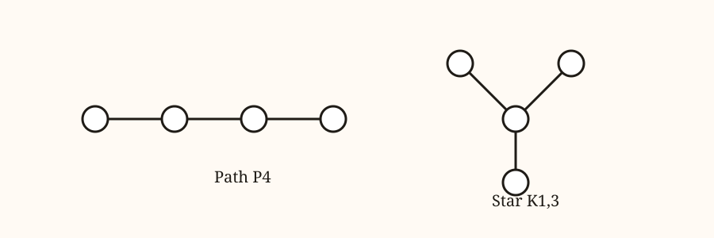
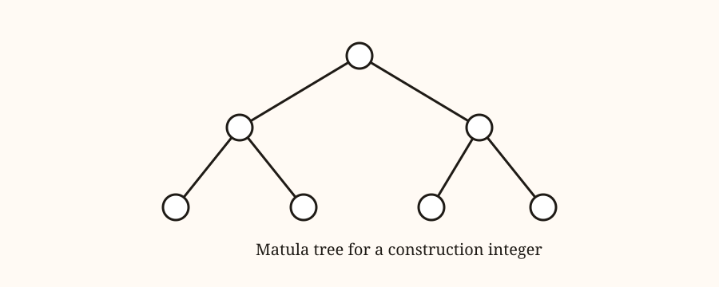
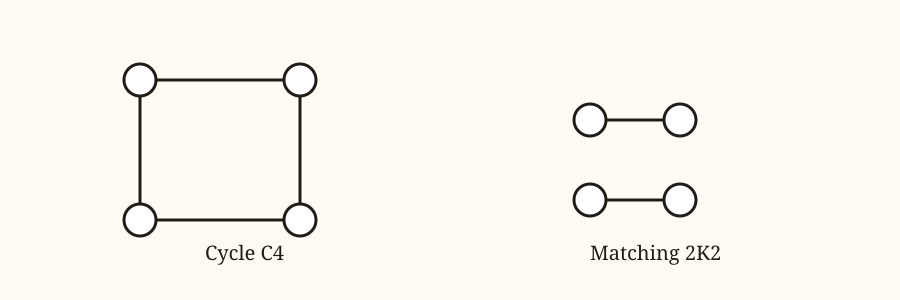
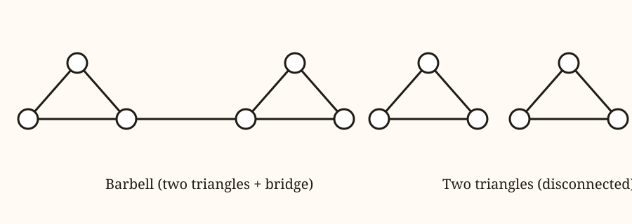

Beat 1
Build a graph, record the choices
Each new vertex chooses which earlier vertices to connect to. That choice is a bitmask. Stack those bitmasks into a mixed-radix number and you get a construction integer.

Beat 2
Mixed radices, not binary
Step k has 2^k choices. The encoding weights each step by the product of earlier radices. Try your own sequence for n = 4.

Try It
Build a five-vertex story
For n = 5, there are four steps. Each step has twice as many choices as the last. Try a custom sequence and see the mixed-radix integer.
Valid ranges grow by powers of two: c1 in [0,1], c2 in [0,3], c3 in [0,7], c4 in [0,15].
Beat 3
Canonicalize by taking the minimum
Every labeling gives a different sequence. The canonical construction is the minimum mixed-radix integer across all labelings. Here is the minimum for small graphs on four vertices.

Beat 4
Topology vs construction
The red-node split separates how blocks connect from what each block is. The barbell and two-disconnected-triangles share the same blocks but a different topology.
Barbell
Two triangles connected by a bridge.
topology: triangle -- bridge -- triangle construction: [K3, K3]
Two triangles
Disconnected components.
topology: triangle triangle construction: [K3, K3]

Related Work
How others have numbered graphs
A classic approach assigns each graph the smallest possible adjacency code among all relabelings. Think: write down the adjacency matrix, read its lower triangle as bits, and pick the smallest number you can get.
That idea appears in graph-code and mincode literature (OEIS A076184, A382754, A382757). Our approach keeps the “minimum over labelings” idea, but the number comes from a construction history and then becomes a Matula tree, so the code itself tells a build story rather than just a snapshot.
Takeaway
From static snapshots to build stories
Graph-code numbers give a canonical snapshot. The construction bijection gives a build narrative, and the Matula tree turns that narrative into a readable diagram.
If you want the formal details, the paper connects the construction integer to a rigorous bijection and complexity story.